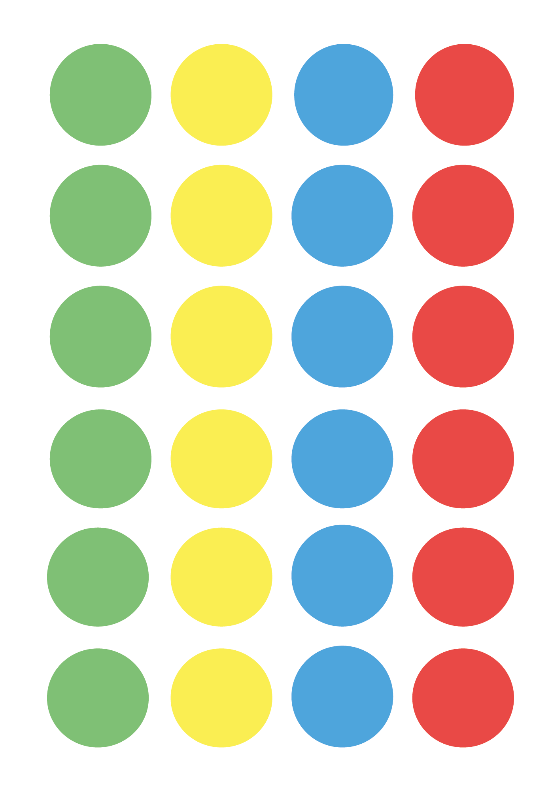

Twister
Hoe speel je het?
Iedere speler krijgt om de beurt een actie. Een actie bestaat uit een kleur en een lichaamsdeel. De speler moet dan deze actie uitvoeren op de twistermat. Wanneer de speler dit niet kan doen verliest hij/zij. De verloren speler moet dan van de twistermat en op doorgaan drukken zodat de andere spelers kunnen verder spelen.
max players: 4